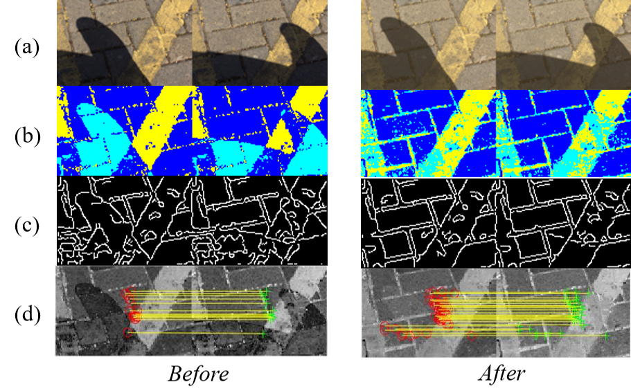

1. Problem
Non-uniform illumination confounds
- color space conversion
- image processing
- image analysis
To deal with this problem
- extend model
- improve algorithm
- ?
2. Basic Idea
Do not change models, algorithms, change images!
We proposed an approach to produce images more suitable for processing:
input image (RGB) --- offset correction ---> output image (ORGB)
The output image, is more illumination-robust for color space conversion, image processing and analysis.

Figure 1. Image processing before and after offset-correction.
- (a) Raw images (RGB and ORGB).
- (b) Image segmentation using hue-saturation and k-means clustering.
- (c) Canny edge detection on saturation.
- (d) FAST feature match on saturation.
3. Advantages
- Existing techniques such as color space conversion using ORGB can perform well even in severe shadow cases.
- Using ORGB images instead of RGB images as input,
the performance of existing methods may be improved in severe shadow cases.
- To test it, you only need to change the input images. Any modification to the algorithms is needed.
4. Contributions
- Provide an explanation of why traditional techniques fail in severe shadow cases.
- Present a new aspect of dealing with severe shadow cases.
- Proposed an approach to produce images that do not cause trouble in severe shadow cases.